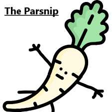
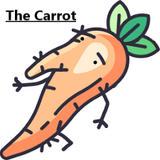

The Parsnip, a race of metamorphosing parsnips, live peacefully in their Metamorphosis Parsnip Universe. They are a highly advanced species, having progressed technologically far beyond humans, and have recently begun to explore new Solar Systems, spreading their influence across their galaxy. However, apart from their cosmological conquest, they have also begun to experiment further in the field of quantum technology and black holes, hoping to perhaps artificially create wormholes for more efficient travel.
Meanwhile, elsewhere in the vast universe, there lived a race of carrots; The Carrot. The Metamorphosis Carrot Universe, as they call it, was only theirs, and they expanded only in their best interest. They destroyed entire worlds for resources; they encapsulated stars with massive industrial machines known to Earth as "Dyson Spheres"; they created vast expanses of trans-stellar transport networks to transfer resources between their many outposts; and they too had begun experimenting with the possibility of wormholes as a means of faster travel.

